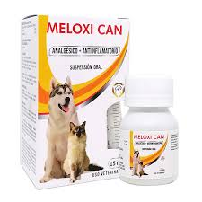

Caninos y Felinos
☰
inicio
Servicios
producto
guarderia
Promociones
Antiparasitarios
Pipetas o comprimidos contra pulgas y garrapatas (como Bravecto o Frontline).
Vacunas veterinarias
Contra enfermedades como moquillo, parvovirus, rabia, leptospirosis, etc.
Alimentos especializados
Dietas veterinarias para condiciones como insuficiencia renal, alergias o sobrepeso (marcas como Hill’s, Royal Canin, Purina Pro Plan).
Shampoos y productos dermatológicos
Para piel sensible, dermatitis, pulgas o control de hongos.
Medicamentos antiinflamatorios o analgésicos

Para tratar dolor, inflamación o postoperatorios (como Meloxicam o Carprofeno).
Antibióticos veterinarios
Usados bajo prescripción para infecciones bacterianas (como Amoxicilina, Enrofloxacina).
Suplementos nutricionales
Para articulaciones, piel, pelo, defensas, etc. (por ejemplo, condroprotectores, omega 3)